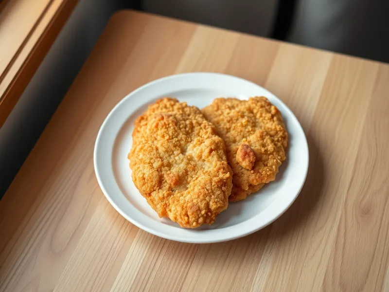

Фото: Иллюстрация ИИ, Cloudflare Workers AI
Куриные отбивные в кляре
Тонкие отбитые пласты филе в яичном кляре, жаренные до румяной корочки
25 мин3 порц.428 ккал на порциюБ 54 · Ж 19 · У 11Русская кухня
Продукты на 3 порц.
- Куриное филе600 г
- Яйцо куриное2 шт
- Мука пшеничная2 ст. л.
- Молоко50 мл
- Растительное масло2 ст. л.
- Соль0,5 ч. л.
- Перец чёрный молотый2 щеп.
Как готовить
- Разрежьте каждое филе вдоль на 2 пласта, накройте плёнкой и отбейте до толщины 0,7-1 см. Посолите и поперчите. Это 7 минут.
- Взбейте вилкой яйца с молоком, мукой и щепоткой соли до однородного жидкого кляра без комочков, 2 минуты.
- Разогрейте масло на среднем огне. Обмакните отбивную в кляр, дайте стечь лишнему и выложите на сковороду.
- Жарьте 3-4 минуты с каждой стороны до золотистой корочки. Готово, когда при надрезе в толстом месте мясо белое и сок прозрачный.
- Выложите отбивные на бумажное полотенце на 1 минуту, чтобы ушёл лишний жир, и подавайте горячими.
Совет. Главное - отбить филе равномерно: тогда оно прожарится за 3-4 минуты с каждой стороны и не пересохнет. Подойдёт любой гарнир или свежие овощи.